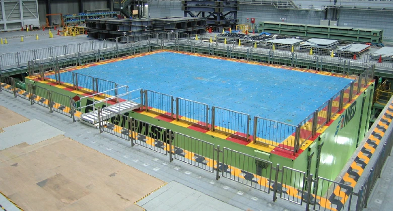

Airbus's Bionic Partition
A cabin wall redesigned by an algorithm inspired by slime mould.
Read case study →Guiding questionHow do designers communicate ideas to different stakeholders?
The guiding question for this topic is about communication, and that framing is the important part. A model is not a small version of a product. It is an argument aimed at a particular person. A client wants to know whether it is worth funding, a user wants to know whether they would use it, a manufacturer wants dimensions and tolerances, and an engineer wants to know whether it will hold. Handing all four of them the same render is how good ideas die in meetings.
So the assessable skill in B2.2 is less "can you make a prototype" and more "can you choose the right one and say why", building directly on the fidelity ideas from A2.2. Finite element analysis is worth flagging, since it is the point where modelling stops describing appearance and starts predicting behaviour. Being able to break something a hundred times in software before building it once has quietly changed how much risk designers can afford to take. Your IA will ask you to model and to justify what each model was for, so get in the habit of naming the audience before you start building.
Students must be able toConstruct and interpret 2D drawings and 3D models, including isometric, orthographic projection, assembly and exploded drawings.
Drawings are the most fundamental form of design communication: they allow designers to share ideas with manufacturers, engineers, clients and users without requiring physical models. Different drawing types serve different audiences and purposes:

Isometric drawings present an object from a corner viewpoint using 30° angles for all horizontal edges. The name comes from the Greek "equal measurement" because true dimensions are preserved along all three axes. Three sides of the object are visible simultaneously, making isometric drawings well suited for presentations to audiences with limited technical training.

Computer games have made use of an isometric perspective for years, first as a way to 'cheat' and have a game with flat drawings appear 3D, and later as a stylistic choice. Older strategy games such as Starcraft and Age of Empires are good examples of using flat art assets to appear 3D (see the screenshot above) while Hades is a modern example of a game that actually uses 3D assets but retains the isometric perspective.

Orthographic projection presents multiple 2D views (typically front, top and side) each projected perpendicularly onto a plane. Together, the views communicate exact dimensions, tolerances and surface specifications. This is the standard for manufacturing and engineering, and most of the time enough measurements and views are available for someone to create an accurate model from a set of orthographic views. (See CAD vs CAD on YouTube for a particularly fun example of orthographic projections being modeled.)

Exploded drawings show how components separate along their assembly axes so the viewer can understand how parts fit together. One of the earliest known examples was created by Leonardo da Vinci around 1478–1480. (See it and more on the Wikipedia page for exploded views.) This type of drawing is particularly useful for understanding complex assemblies and ensuring that all parts are correctly positioned.

Assembly drawings show how multiple components come together into a functional system or assembled part. They typically include a Bill of Materials (BoM), a numbered list of every part, and linked to callout labels on the drawing. Lego provide assembly instructions, but each page could be used as a small example of this, since they include the 'bill of materials' for that page, along with the assembled drawings and visual callouts showing where each part goes.

Perspective renderings use one or more vanishing points to create a realistic sense of depth. They do not preserve true dimensions but communicate the overall appearance and feel of a product convincingly to non-technical clients and investors. They're also a great excuse to use way more colors in your work.
Students must be able toConstruct and interpret aesthetic and functional prototypes at different levels of fidelity, including the considerations of scale, shape and space.
Physical prototypes exist on a spectrum of fidelity: how closely they match the final product in appearance, materials and function. Choosing the right fidelity for each stage of development is a critical design decision.
Low-fidelity prototypes (cardboard, foam, tape, paper) are fast and cheap to build. They test core concepts, spatial relationships and rough proportions without committing to materials or manufacturing. Dyson famously used cardboard models extensively during development of the DC08 vacuum. The "fail fast, fail cheap" principle applies: expose problems early when changes cost almost nothing.
Medium-fidelity prototypes have more accurate shape and proportions and may include some working features, but often use substitute materials (e.g., 3D-printed plastic instead of die-cast aluminium). They provide a useful balance between cost and realism for user ergonomic testing and stakeholder review.
High-fidelity prototypes use final materials and, ideally, final manufacturing processes. They generate meaningful performance data (task completion rates, error rates, satisfaction scores) that earlier prototypes cannot. Changes at this stage are costly, so the concept must already be well-validated before investing here.
Prototypes are also categorised by purpose:
Considerations of scale (is it 1:1 or reduced?), shape (are ergonomic dimensions accurate?) and space (does it fit its intended environment?) affect which prototype type is appropriate at each stage.
Students must be able toConstruct and interpret surface, solid and virtual models.
CAD (Computer-Aided Design) has become an integrated environment for ideation, refinement, simulation and communication. Rather than producing drawings alone, modern CAD platforms allow a single model to generate technical drawings, photorealistic renders, FEA simulations and manufacturing data.
CAD models fall into three main categories:
Generative design is an emerging CAD approach in which the designer supplies constraints (load conditions, material, manufacturing method, weight targets) and an algorithm explores thousands of design permutations, often producing organic lattice structures that no human would draw intuitively, yet which meet all specifications at minimum material weight. Depending on your specific CAD program you might be able to try using this feature, but note that it isn't typically free, and that it isn't necessarily suitable for 3D printing applications.
A cabin wall redesigned by an algorithm inspired by slime mould.
Read case study →Students must be able toInterpret the output from FEA.
Finite Element Analysis (FEA) is a computer simulation technique that predicts how a virtual model will behave under applied forces, heat, pressure or motion. The software divides the model into a mesh of small, simple elements (triangles or tetrahedra) and mathematically calculates stress, strain and displacement at every node in the mesh. Results are typically displayed as colour contour plots: regions under the highest stress appear red, low-stress regions appear blue.
Key failure modes FEA identifies:
FEA allows designers to test and refine virtual models without building physical prototypes, significantly reducing development cost and time. However, results are only as reliable as the mesh quality, material data and boundary conditions: garbage in, garbage out.
One thing the colours will never tell you: an FEA result is only as good as what the analyst told it. Bolt this bracket at one hole instead of two, refine the mesh, or swap the material, and the same geometry returns a different answer. The software makes none of those choices, which is why "the simulation says it is fine" is a claim you should always ask questions about.
Students must be able toConstruct and interpret CAD models suitable for rapid prototyping.
Rapid prototyping uses digital CAD models to produce physical objects directly, without manual machining or tooling. The three principal additive manufacturing processes are:
CAD model requirements for rapid prototyping: The model must be a watertight solid with no open surfaces, gaps or self-intersecting geometry. It is exported as an STL (stereolithography) file, which approximates curved surfaces as a mesh of triangles. Resolution (triangle count) must be high enough to preserve fine details. Wall thickness must meet minimum thresholds for the chosen process to avoid fragile or failed builds.
STEP, OBJ, and 3MF files may also be used, and offer additional features and compatibility. An example of meeting a minimum threshold is ensuring that model walls are thicker than the nozzle size on an FDM printer. For example, the machines we use at school have .4mm nozzles, so model walls must be at least 4mm thick, and in reality, they should be closer to 1mm to guarantee successful printing.
An STL file (the name comes from "stereolithography", the process it was originally created for) describes a 3D shape using only flat triangles. A curved surface, such as a sphere or a fillet, has no exact triangular equivalent, so the STL format approximates it: the more triangles used, the closer the faceted surface gets to the true curve, at the cost of a larger file and longer processing time.
This is the same trade-off that governs the mesh used in FEA simulation: a coarse mesh (or a low-triangle-count STL) is fast to process but blurs fine geometric detail, while a fine mesh captures detail accurately but takes longer to compute or print. Designers choose resolution based on what the model needs to show: a low-poly STL is fine for a rough proportion check, but a part with delicate curved features needs a high-resolution export to print correctly.

A full-size building on the world's largest shake table, destroyed on purpose.
Read spotlight →Students must be able toSelect and use appropriate drawings, physical prototypes and CAD models to gather relevant data and feedback, which can be used to analyse and develop the design iteratively.
No single prototype type is right for every audience or purpose. Selecting the appropriate modelling tool for each stakeholder group is a core design skill:
The iterative process means feedback from one stakeholder group informs the next prototype. A user session revealing grip problems triggers a shape change; the new shape is validated with FEA before a revised physical prototype is built. Matching prototype type to audience and question (not defaulting to the highest fidelity available) is what makes iteration efficient.
Hover, focus or tap a card for the full breakdown: purpose, audience and the data it actually gives you.
Ten questions covering drawing types, prototype fidelity, CAD modelling, FEA and rapid prototyping. Select one answer per question, then click "Check all answers" to see your score and the explanations.
A charity designs low-cost partial-hand prostheses for children. A child outgrows a device in about ten months, so the design must be cheap enough to replace. The device is body powered: bending the wrist pulls cords that close the fingers.
Four prototypes were made during one development cycle.
Table 1: Prototypes made during one development cycle
| Prototype | Form | Shown to | Question it answered |
|---|---|---|---|
| 1 | Card and elastic band, non-working | Design team | Does the linkage geometry make sense? |
| 2 | 3D printed, working, unfinished | Occupational therapist | Is the grip pattern clinically useful? |
| 3 | 3D printed, working, painted, sized to one child | The child and family | Will the child wear it? |
| 4 | Production materials, full assembly | Funding body | Can it be made for the target cost? |
(a) State the fidelity of prototype 1, see Table 1. [1]
(b) Describe why prototype 3 was painted and sized to one child when prototype 2 was not, see Table 1. [2]
(c) Explain how the audience for each prototype determined the form it took, see Table 1. [3]
(a) Low fidelity.
(b) Prototype 3 has to answer whether a child will actually wear the device, and that is a question about how it looks and feels to own, so it has to look like a finished product rather than a test rig. The therapist assessing prototype 2 was judging grip function and could ignore an unfinished surface, but a child shown a bare printed part would be reacting to something the finished device would never be.
(c) Each audience can only answer the question it is competent to answer, and each needs a different amount of the product to be real before it can. The design team could read linkage geometry from card and elastic, because they understand the mechanism and are the least distracted by the absence of everything else, so the cheapest possible model was enough. The therapist needed the grip to actually work, since a clinical judgment about whether a grip pattern is useful cannot be made from a non-working model, but needed nothing beyond that, so the print was left unfinished. The child needed the opposite: not engineering detail but appearance, colour and correct fit, because a child's acceptance is a response to the object as a thing to wear. The funding body needed real materials and a real assembly, since it is being asked about cost, and cost is a property of the production process rather than of the design. Building each at the lowest fidelity its audience could work with is what kept the cycle affordable.
(a) • Low fidelity ✓
Award [1] for the correct classification up to [1 max].
(b) Prototypes are created to gather data and feedback from potential users and clients, and fidelity is matched to the question asked.
• Prototype 3 must establish whether the child will wear the device, which is a question about appearance and ownership ✓
• Acceptance cannot be judged from an object that does not look like the finished product ✓
• Colour and finish are part of what the child is being asked to accept ✓
• It must fit one child, because a device that does not fit cannot be worn or judged ✓
• The therapist was judging grip function and could disregard the unfinished surface ✓
• Finishing prototype 2 would have added cost without answering its question ✓
Award [1] for each detail, leading to an account of why prototype 3 was finished and prototype 2 was not, up to [2 max].
(c) Physical prototypes can be developed at a range of fidelity for different users and environments.
• Each audience can only answer the question it is competent to answer ✓
• Each needs a different amount of the product to be real before it can answer ✓
• The design team reads linkage geometry from card because they understand the mechanism ✓
• Specialists are least distracted by what is missing, so the cheapest model suffices ✓
• A clinical judgment on grip pattern requires a working device, so prototype 2 had to function ✓
• The therapist needed nothing beyond function, so the print was left unfinished ✓
• The child responds to the object as a thing to wear, so appearance and fit matter more than mechanism ✓
• The funding body is asked about cost, which is a property of production materials and assembly ✓
• Building at the lowest fidelity each audience can work with keeps the cycle affordable ✓
Award [1] for each relevant reason / cause relating audience to prototype form up to [3 max]. Award a maximum of [2] where the response addresses fewer than two audiences.
A concert hall is fitted with suspended acoustic panels. Each panel is a curved aluminium shell, 2.4 m across and 4 mm thick, hung from four points in the roof structure 14 m above the audience.
Before manufacture the panel was analysed in CAD. A finite element analysis applied the panel's own weight plus a 90 kg maintenance load at the worst point, and reported the results below.
Table 2: FEA results for two panel designs
| Design A, flat 4 mm | Design B, curved 4 mm with rolled edge | |
|---|---|---|
| Maximum deflection at centre | 42 mm | 6 mm |
| Maximum stress | 186 MPa | 71 MPa |
| Yield strength of alloy | 240 MPa | 240 MPa |
| Mass | 31 kg | 33 kg |
(a) State what finite element analysis predicts about a part before it is made. [1]
(b) Outline why design B carries a lower maximum stress than design A despite being almost the same mass, see Table 2. [2]
(c) Evaluate the use of FEA in place of building and load-testing a physical panel, see Table 2. [3]
(a) How the part will deform and where stress will concentrate when loads are applied.
(b) Stiffness in a sheet comes from its shape rather than from how much material it contains, and curving the panel and rolling its edge move material away from the neutral axis, which raises the second moment of area. The panel therefore resists bending far more effectively, deflecting 6 mm rather than 42 mm, and because it bends less it develops much lower stress for the same load.
(c) FEA earns its place here. It compared two designs before either existed, which is the only affordable way to test a 2.4 m panel, and it reported where stress concentrates inside the material rather than only whether the panel survived, so the rolled edge could be designed rather than guessed at. It also allowed the maintenance load to be placed at the worst point, something a physical test would only find by trial. Against that, the results are only as good as the assumptions: the 90 kg load, the fixing conditions at the four hang points and the alloy properties are all inputs, and a wrong assumption produces a confident wrong answer. FEA also says nothing about how the panel behaves in the actual application, since a suspended panel over an audience is subject to vibration and long-term fatigue rather than a single static load, and nothing here addresses either. The sensible conclusion is that FEA has replaced the exploratory testing but not the final proof, and one physical panel should still be load tested before 200 are hung above people.
(a) • How it will perform under certain conditions ✓
• Where it will deform and by how much ✓
• Where stress will concentrate ✓
• Whether it will yield or fail under a given load ✓
Award [1] for one correct statement of what FEA predicts up to [1 max].
(b) FEA is used to simulate how a part or assembly will perform under certain conditions.
• Stiffness in a sheet comes from its shape rather than from the quantity of material ✓
• Curving the panel moves material away from the neutral axis ✓
• The rolled edge adds depth at the perimeter, where bending stress is carried ✓
• Both raise the second moment of area, so the panel resists bending ✓
• Deflection falls from 42 mm to 6 mm, so the panel bends far less ✓
• Less bending means less strain, so stress falls from 186 to 71 MPa ✓
• The 2 kg mass increase is a small price for a stress reduction of over 60 % ✓
Award [1] for each relevant brief point explaining the lower stress in design B up to [2 max]. Credit responses that refer to geometry rather than material quantity.
(c) CAD is used to create virtual prototypes to test ideas and gather insights that inform product development.
Strengths:
• Two designs were compared before either existed ✓
• Building and testing a 2.4 m panel is expensive, so simulation is the only affordable way to iterate ✓
• It reports where stress concentrates inside the material, not only whether the panel survived ✓
• That allowed the rolled edge to be designed rather than guessed at ✓
• The maintenance load could be placed at the worst point, which a physical test finds only by trial ✓
• Design A can be rejected at 186 MPa against a 240 MPa yield without any material being cut ✓
Limitations:
• Results are only as good as the assumptions supplied ✓
• The load, the fixing conditions at the hang points and the alloy properties are all inputs ✓
• A wrong assumption produces a confident wrong answer with no warning ✓
• The analysis is static and the real panel is subject to vibration and long-term fatigue ✓
• Manufacturing variation, weld quality and material defects are not modelled ✓
Judgment:
• FEA has replaced exploratory testing but not the final proof ✓
• One physical panel should be load tested before 200 are hung above an audience ✓
Award [1] for each distinct strength / limitation, leading to an appraisal of FEA in place of physical load testing, up to [3 max]. Award a maximum of [2] where only strengths or only limitations are given. Credit responses that reach a judgment about the safety-critical application.
A designer is developing a folding market stall for street traders. It must be carried in a small van, set up by one person in under five minutes, and stand in wind and rain for a ten hour trading day.
The first output was a set of drawings: freehand sketches of six frame arrangements, then an exploded drawing of the chosen joint, then an orthographic projection of the folded package with overall dimensions.
(a) Identify two pieces of information the orthographic projection communicates that the exploded drawing does not. [2]
A quarter-scale model was built in dowel and card, then a full-size frame in scaffold tube with clamps standing in for the production joints.
(b) Outline what the full-size frame tested that the quarter-scale model could not. [2]
The frame was then modelled in CAD and a finite element analysis applied a wind load to one side. The analysis showed the highest stress at the joint between the leg and the top rail, and the designer added a gusset there.
(c) Describe why the designer used FEA to locate the highest stress rather than loading the scaffold frame until it failed. [2]
Ten traders were given a working prototype for a week each. Six of the ten failed to fold it correctly on the first attempt, and three left one leg unlocked.
(d) Explain why the trader trial found problems that the drawings, models and simulation did not. [4]
(a) The overall dimensions of the folded package to scale, and the proportions of the stall seen from more than one direction.
(b) Everything that depends on the real size of the thing: whether one person can lift and manoeuvre a full-size frame alone, and whether the parts can be reached and held in position during setup. A quarter-scale model is light enough to handle with two fingers, so it cannot test a five-minute single-handed setup.
(c) Loading the frame to failure destroys it and only tells the designer where it broke, which is not necessarily where the stress is highest, because the failure runs from whichever point is weakest once the first crack forms. FEA shows the stress distribution across the whole frame while it is still intact, so the designer can see the joint is the critical point before adding material, and can re-run the analysis with the gusset in place to check the fix worked.
(d) Each earlier stage was answering a question about the object, and the trial was the first to ask a question about a person using it.
Drawings and models are examined by the designer, who knows how the stall is meant to fold because they invented the sequence. That knowledge cannot be removed by looking harder, so the designer cannot discover that the folding order is unclear. A trader arriving with no explanation is the only source of that finding, and six of ten failing on the first attempt shows the problem is in the product rather than in the traders.
The simulation was answering a different question again. FEA tested whether the frame withstands a wind load, and it would return the same result whether or not a leg was locked, because the model is built with the frame in its assembled state. An unlocked leg is not a structural question, it is a question about whether the user can tell the leg is unlocked, and nothing in a stress analysis addresses that.
The trial also introduced conditions the earlier stages excluded. A week of real trading means setting up in the dark, in rain, in a hurry and while distracted by customers, and the three unlocked legs are likely to be a product of those conditions rather than of the mechanism in isolation. A model tested in a workshop by an unhurried designer never meets them.
Finally the trial has enough users to show a rate. One trader struggling is an anecdote; six of ten is evidence, and the difference matters because it tells the designer this is a defect to fix rather than a variation to accept. It also raises the most serious finding, since an unlocked leg on a stall standing in wind for ten hours is a safety failure, and it took real users in real conditions to reveal it.
(a) Drawings facilitate the discussion of concepts to others for feedback or information.
• Overall dimensions of the folded package, to scale ✓
• Proportions seen from more than one direction ✓
• Whether the folded stall fits the van ✓
• True lengths that can be measured from the drawing ✓
• The external form rather than the internal parts ✓
Award [1] for each relevant piece of information identified up to [2 max]. The information must be one an exploded drawing does not carry.
(b) Physical prototypes are used to test ideas and gather insights that inform development, and scale limits what a model can test.
• Whether one person can lift and manoeuvre a full-size frame alone ✓
• Whether the setup can be completed in under five minutes ✓
• Whether parts can be reached and held in position during assembly ✓
• The real mass of the frame and whether it is carryable ✓
• Whether the frame is stable when partly assembled ✓
• A quarter-scale model is handled with two fingers, so it tests none of these ✓
• Forces and stiffness do not scale linearly, so a small model does not predict full-size behaviour ✓
Award [1] for each relevant brief point on what the full-size frame tested up to [2 max].
(c) FEA is used to simulate how a part or assembly will perform under certain conditions.
• Loading to failure destroys the prototype ✓
• A break shows where it failed, which is not necessarily where stress was highest ✓
• Once the first crack forms the failure runs from the weakest point, masking the original cause ✓
• FEA shows the stress distribution across the whole frame while it is intact ✓
• The critical joint is identified before any material is added ✓
• The analysis can be re-run with the gusset in place to confirm the fix worked ✓
• No risk of injury from a frame failing under load ✓
Award [1] for each detail, leading to an account of why FEA was used rather than a destructive test, up to [2 max].
(d) Prototypes are created to gather data and feedback from potential users and clients, and user testing answers questions that analysis cannot.
The designer cannot test their own knowledge:
• Drawings and models are examined by the person who invented the folding sequence ✓
• That knowledge cannot be set aside, so the designer cannot find that the sequence is unclear ✓
• Only a user arriving without explanation can reveal it ✓
• Six of ten failing shows the fault is in the product, not in the traders ✓
The simulation asked a different question:
• FEA tested wind resistance of an assembled frame ✓
• The model assumes the frame is correctly assembled, so it cannot reveal an unlocked leg ✓
• An unlocked leg is a question about feedback to the user, not about stress ✓
Real conditions:
• A week of trading means setting up in darkness, rain, haste and distraction ✓
• The three unlocked legs are likely to be a product of those conditions ✓
• A workshop test by an unhurried designer never meets them ✓
• Repeated daily use reveals wear and habit that a single trial does not ✓
Sample and consequence:
• Ten users give a rate rather than an anecdote, so the finding is evidence ✓
• A rate distinguishes a defect to fix from a variation to accept ✓
• An unlocked leg on a stall standing in wind for ten hours is a safety failure ✓
• The most serious finding of the whole programme came only from real users ✓
Award [1] for each relevant detail / reason / cause explaining why the trial found problems the earlier stages did not up to [4 max]. Award a maximum of [3] where the response does not distinguish the questions each stage was answering. Credit responses that identify the safety consequence.
Linking Questions
Airbus needed to replace a cabin partition on their A320 aircraft. This is the wall which separates economy seats from the galley. Rather than sketching a shape and checking it against that load in FEA, Airbus's design team gave a generative design algorithm the load case, the material, the mounting points and a maximum weight, then let it explore. The algorithm reportedly generated well over a thousand candidate geometries.

The winning shape looks nothing like a wall a person would draw: a lattice of branching, organic struts that resembles bone structure or the growth pattern of slime mould, because the algorithm was, in effect, solving the same problem biology has already solved many times over, put material only where load actually needs to travel. Manufactured by 3D printing in titanium, the finished partition weighs 45% less than the original design while passing the identical certification load tests. Airbus estimated that fitting every A320 in its fleet with this design would save hundreds of thousands of tonnes of CO2 emissions a year, purely from carrying less weight. Read more: Pioneering bionic 3D printing - Airbus

Most seismic engineering leans on small-scale models and computer simulation, because building and then destroying a full-size structure is expensive. E-Defense, a research facility in Miki, Japan, built after the 1995 Kobe earthquake exposed how much standard building codes still got wrong, does the opposite. Engineers can bolt a complete, realistically-built structure, like a full-scale house, apartment block, or office building onto the world's largest shake table. They are able to reproduce the exact ground motion recorded during a real earthquake at full intensity until the structure is damaged or collapses.

Every test structure is has with hundreds of sensors installed that record exactly how forces travel through the building. They can show precisely where and when a beam, joint or wall gives way. This is the kind of failure sequence that a small-scale model or a simulation can only estimate. Footage of a full-size building crumpling floor by floor, filmed head-on and shared widely after each major test, has repeatedly challenged assumptions baked into existing seismic codes, and led to revised standards for joints, base isolation and retrofits. The same logic applies to any destructive prototype test. Breaking a full-scale, realistic version of something on purpose teaches you something a survived test never could, whether it's a product or a building.